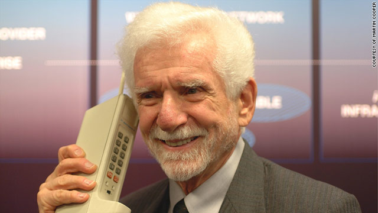
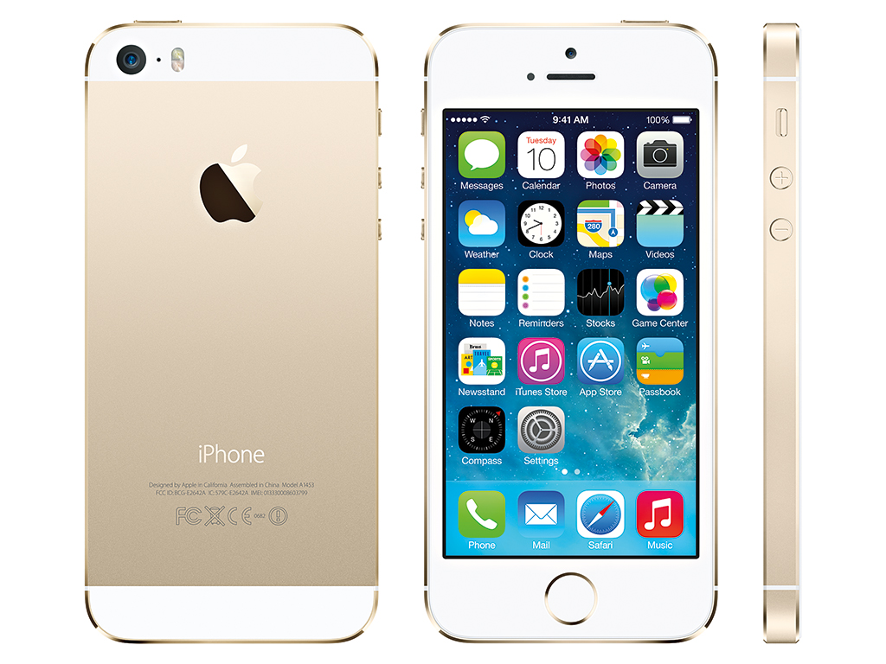

HOW CREATIVITY HAS INFLUENCED TECHNOLOGY IN PAST
We often assume the technology we rely on came from the minds of genius inventors determined to solve a problem. And most original concepts will have been inspired by the need to improve the way something was done. But some ideas spring from the imaginations of creative people who have little or no expertise in design and just the ability to imagine worlds beyond the constrictions of the here and now. Imagining the impossible has allowed science fiction writers to explore concepts and ideas previously unthought-of. Those men and women have, in turn, inspired those with the necessary expertise to turn their ideas into reality. Many of the inventions we use every day were inspired by the stories written many years before they were possible.

In history we find countless examples of how creativity has influenced Technology which has led to change in various human dimensions like lifestyle, work, society, research etc.
Many Technology have their main inspiration credited to many creative works like fiction, movies, shows, mythology, imagination etc.
Technologies Inspired by Creativity
As we know “need is the mother of inventions”. Most of the inventions occurred as we felt the need for them. However, some inventions were inspired by science fiction novel and movie and later on they become a need for us. Let’s go through some of the inventions inspired by Creativity in a sense that people may not be aware about:-


Martin Cooper inspired by Communicator featured in STAR TREK, created one of the first portable phones in history. People often termed it as ‘Brick’ as it weighed 5kg and had to be charged for 10 hours to use only for 20 min, but he still worked on this idea. It would happen surprising for people in 1970s to imagine, that invention would revolutionize the world and was to become the technology of next generation.
The idea of the first liquid-fueled rocket was inspired by 1897 science fiction novel “War of the Worlds” written by H. G Wells. The novel was about Martian invasion. Robert H. Goddard was impressed with the concept of interplanetary travel in the book. Goddard successfully launched the first rocket on 16th March 1926. Dr. Robert Hutchings Goddard is now considered as the father of modern rocket propulsion.
Supposedly the most advanced non-lethal weapon the police have at their disposal, the Taser has been the bane of street criminals’ lives ever since it was introduced in the 1970s.
The concept of an electric gun came from one of Cover’s favourite novels, Tom Swift and His Electric Rifle. The book describes the titular hero Swift, a genius inventor, as he travels through Africa, while at the same time inventing an electric rifle. Cover was such a fan of the idea of an electric rifle that he named his device after the book: ‘Taser’ is an acronym, standing for ‘Thomas A Swift’s Electric Rifle’.
The device pumps electrical current into its target, causing strong stimulation of the sensory and motor nerves, leading to involuntary muscle contractions. Such has been its success that a 2009 study showed officer injuries fell by 76 percent when a Taser was used, and surveys of police show as many as 75,000 lives have been saved by using the weapons (or so the manufacturers claim).
Hardly the most glamorous of inventions, the automatic sliding door was still once the stuff of science fiction. More than half a century before its invention, the automatic door appeared in HG Wells’ 1899 serialised story When the Sleeper Wakes. The two men went to work inventing an automatic sliding door that would circumvent the problem of high winds and their damaging effect. Horton Automatics Inc was formed in 1960, placing the first commercial automatic sliding door on the market and literally establishing a brand-new industry.
Frankenstein is cited by some as the first science fiction novel. In Mary Shelley’s 1818 book, scientist Victor Frankenstein uses dead body parts to build a man, bringing him to life with a powerful electric current. While such an extreme feat has yet to be achieved, transplanting body parts from one human to another has been possible for some time. Transplants have been attempted for centuries, but the ability to make host bodies accept donor organs has only come about in the last 100 years.
Dr Richard H Lawler of Chicago achieved the first successful kidney transplant in 1950, and in 1967 Christian Barnard performed the first heart transplant, in South Africa. It is thought Shelley’s story had a huge influence on the idea of organ transplantation, and her idea of using electricity to animate a body could be seen as a foreshadowing of the defibrillator. Such innovations have proved vital in saving lives the world over.
The invention of a submarine was inspired by a science fiction novel. Simon Lake was inspired by Jules Verne’s, Twenty Thousand Leagues Under The Sea. Fascinated by the idea of designing something that could travel under the sea, He finally designed the first model and submitted plans to the Navy in 1892. He built his first experimental submarine “The Argonaut Junior” in 1894. The success of the first submarine led to the formation of the Lake Submarine Company of New Jersey in 1895. The company built the submarine “Argonaut” which was the first submarine to operate successfully in the open sea in 1898. Simon Lake earned a congratulatory message from Jules Verne for implementing his idea.
1. Mobile Phones
2. Rockets

3. Taser Gun

4. Automated Doors
5. Organ Transplant

6. Submarines